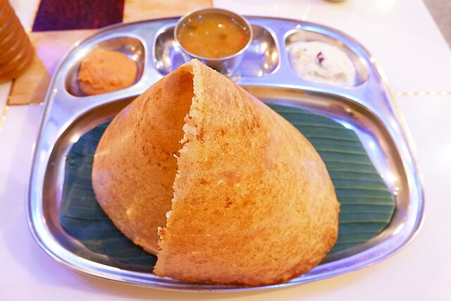

Dosa

About Dosa
A dosa is a thin, savoury crepe in South Indian cuisine made from a fermented batter of ground black gram and rice. Dosas are served hot, often with chutney and sambar (a lentil-based vegetable stew). Dosas are popular in South Asia as well as around the world.
Dosas are made with dosa batter which is made of lentils and rice. This batter is also used to make idli.
Ingredients
- Lentils 1/2 Cup of Urad dal, 2 Tablespoon of bengal gram.
- Rice 11/2 of raw rice. Though you can use any kind of non sticky rice, you can use combination of raw rice & idli rice/parboiled rice.
- Fenugreek seeds1/2 Tablespoon
How to make Dosa
Make Dosa batter
- Add 1/2 cup urad dal, 2 tablespoon bengal gram and 1/2 teaspoon Fenugreek seeds to a large bowl. Add 11/2 cups rice to another bowl.
- Rinse dal thoroughly a few times adn soak in lits of filtered water for 4 hours. During cold weather they can be soaked up to 6 hours or even overnight.
- Rinse rice too a few times until the water uns clear. Soak in enough filtered water for 4 hours. Same here as well, During cold weather they can be soaked up to 6 hours or even overnight.
- Drain the water completely from dal and pour 3/4cup cold filtered water.
- Blend until smooth, frothy and bubbly. If needed add more water. I add another 2 to 4 tablespoons water. But do not make it thin or runny. It must be a thick batter yet pouring consistency.
- Transfer the batter to a large bowl. Drain rice completely and add to blender jar. Pour 1/2cup water.
- Blend to slightly coarse batter.
- Add the rice batter to the urd dal batter. Mix both of them well. The warmth in the hand is said to help in fermentation if want you may use your hand. The prepared batter must ve of pouring consistency yet thick not runny.
- Cover and ferment it in a warm place until the batter rises and turns bubbly. If you live in a warm region, you can leave it on the counter overnight. It may take anywhere form 5 to 16 hours depending on the temperature.
- Do not over ferment the dosa batter as it turns sour and the batter is not so good to spread on the griddle.
Make Dosa
- Once your dosa batter is fermented, stir it gently and take a required potion to a small bowl. Keep the rest of the batter in the refrigerator for 1 to 2 weeks. The batter wil be thick after fermentation. Add little water, to bring it to a pourable and spreading consistency.
- Heat a dosa griddle/tawa on a medium heat. When it is slightly hot, add few drops of oil and spread it with a kitchen paper or a half cut onion. This prevents the dosa from sticking to the pan. It is important not to leave excess oil on the griddle, so wipe down if required.
- To check if the pan is hot enough, sprinkle a few drop of water over the pan. If it is ready, it should sizzle. Reduce the heat to low or medium, stir the batter with a ladle and take a ladle (1/4 cup) of dosa batter & pour in the center of the hot griddle/tawa.
- Immediately begin to spread it evenly with base of the ladle - starting from the centre, in an outward circular motion in a clock direction.
Trouble shooting tip If you are unable to spread the batter because it got stuck to the pan, it means either the pan is too hot or the batter is too thick. Reduce the flame and cool down the pan slightly. If that doesn't work then pour little more water to your batter to bring to right consistency. Also too much oil on the empty pan won't let you spread the batter well.
- Increase the heat to medium high and drizzle 1tsp oil/ ghee/ butter across the edged & on the dosa. The edges of the dosa will begin to leave / come off the pan when done.
- Cook until the base turns golden & crisp. Run a thin wooden turner/ spatula across the base of the dosa, starting from the edges to the center. Optional - IF you want you may cook on the other side - turn it to the other side and cook for a minute. Turn again and cook the base for 330 seconds to crisp it.
- Plain dosa in most commonly served with coconut chutney. Fold the dosa and remove to serving plate. Before making the next dosa, reduce the heat to low. You can also rub cut onion and then pour the batter. Make sure there is no excess oil on the pan.